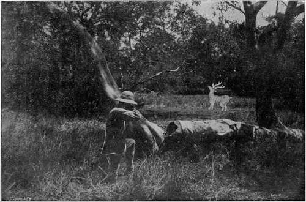

Chapter XI. Cheetul (Spotted Deer)
Description
This section is from the book "Sport In The Low-Country Of Ceylon", by Alfred Clark. Also available from Amazon: Sport in the Low-Country of Ceylon.
Chapter XI. Cheetul (Spotted Deer)
THE cheetul, Cervus axis, is the animal which is universally spoken of in Ceylon as the "spotted deer," and is so described in the Game Ordinance. It is, however, obviously absurd that Ceylon men should have a name for one of the commonest of the deer-tribe different from that by which it is known to their brother sportsmen throughout the length and breadth of India. It is called in Sinhalese müwa and in Tamil pûli-mân or "leopard deer." There is no doubt that it is far and away the most beautiful animal in the Ceylon forests. Most men, on shooting one for the first time, have felt some remorse on seeing the golden-coated, graceful, gentle creature lying gasping out its life on the ground.
Cheetul are not found in the hills but only in the low-country, especially in the coast forests, where there are grassy plains interspersed with bushes and strips of forest to which they can retire during the day. The high forests in the interior contain comparatively few of them, but they are numerous in the park-country, the glades along banks of rivers and the neighbourhood of tanks. They are less nocturnal in their habits than sambhur.
They are gregarious and may sometimes be seen in herds of fifty or sixty in wild parts of the country, though more often in parties of about a dozen and not infrequently in families. They are very conservative in their habits and never wander far from their accustomed haunts. Unlike the males of most other large species of wild animals the bucks remain with the herd and do not go about feeding by themselves. They, however, keep aloof from each other, one or two antlered ones lording it over the others. Should two big bucks accidentally come together within butting distance a fight follows. It is a pretty sight to see the handsome creatures, with proudly arched necks, bristling coats and flashing eyes approach each other slowly with mincing steps and then suddenly rearing, bring their long, thin sharp antlers together with a clash and after a few minutes' scuffling, disengage and go promenading round, apparently under the impression that the admiring eyes of their does are upon them. These, however, continue to graze placidly or stand licking their fawns, paying not the least attention to their lords "goings on."
A full-grown buck will stand from 36 to 40 inches at the shoulder, will weigh about 18 stone, and has usually remarkably graceful, slender antlers. Mal-formed horns, are, however, not uncommon, both among these deer and sambhur, the results generally of accidents while growing. Cheetul are said to shed their antlers about the beginning of the hot weather, but it is improbable that there is any particular season. It is in fact doubtful whether they shed their horns regularly every year, more especially after they have passed middle age. When their new horns are nearly grown they rub them against trees to scale off the dry skin which adheres to them. For this "burnishing" they seem to choose particular trees from the bark of which resin exudes. Most "shed" horns are picked up by natives in the open plains, the long grass of which they burn off in order to facilitate the search, a highly objectionable proceeding for which they can be punished if caught.
Albinos almost white in colour are sometimes seen. Robert Knox, in his charming old book, gives an account of the capture of one for the King of Kandy, which was accomplished by the surrounding of the herd, of which it was a member, by a large body of men.
Cheetul are not easily approached, having all their senses highly developed and being always on the alert. When stampeded their movements as they bound away are extremely graceful, but if they merely suspect that danger is near they will slink off head down at a trot. They can swim well, but only take to the water when hard pressed. Bucks hunted by dogs in the coast forests have been known to plunge into the sea and swim out to rocks some distance from shore. They do not appear to be able to dig for water as sambhur do.
The "belling" of bucks is a peculiar moaning sort of bellow generally to be heard at night. When frightened cheetul utter short, sharp barking sounds which are more suggestive of fear than any other wild animal cry.
The does carry their young for about six months. The fawns are about the prettiest little creatures in the world and make the most affectionate pets, following their owners about like dogs. Many are killed every year by pythons which lie in wait in the grass at narrow places in the glades. The mothers try to rescue their young and to kill the snakes by stamping on them with their sharp-hoofed forefeet, but it is to be feared, very seldom succeed,
Chtetul (Spotted Deer) Shooting.
Cheetul may not, of course, be fired at without a game license, nor during the close season. The best weapon for shooting them is perhaps a good double -450 express, but, if they are very wild and the country is open, an accurately sighted, single, small-bore rifle will be required for long shots. When met with in the forest they can be killed with buck-shot, but it is an unsportsmanlike and cruel method. They are, with the exception of wild pigs, about the only animals which, owing to their frequenting grassy plains and open places in the forest in the day-time, can be stalked and shot at long range. They will not, as a rule, be found out in the open after about eight o'clock in the morning or before five o'clock in the evening. After a rainy night, however, they will often stay out, almost all day, if the sky be cloudy, as they greatly dislike the drip from the sodden forest trees on their coats. They may sometimes be found in newly-burnt chenas or where there have been grass fires, having gone there to lick the ashes.
To shoot them it is best to be about very early and to prowl quietly up-wind round the edges of plains, tanks, old fields and other open places, taking care to keep behind the bushes as much as possible. A small pair of glasses will be found useful to take a look round on emerging onto open country. Cheetul, when standing still, are not to be easily distinguished from the back-ground of forest, and unless precautions are taken, will detect a moving figure at a great distance and be off. They are not easily stalked, and many a man, after a laborious crawl on hands and knees, has raised his head cautiously on Hearing the herd only to find that they have vanished like shadows.
On coming unexpectedly on a herd of deer out of range, and seeing them all raise their heads quickly, the sportsman should instantly become as rigid as a rock and not stir hand or foot. Unless they have been much hunted and are very wild the deer will stare fixedly at him, and after a time, seeing no further movement in the object which had alarmed them, will often resume browsing. If the sportsman then lowers himself by imperceptible degrees he may succeed in getting to cover without stampeding the herd and in getting a shot shortly afterwards. Most sportsmen have noticed how instantaneously an object moving in the distance disappears from view on ceasing to move. This is best seen in the case of birds on the wing. A flock of small birds may be seen Aying a long way off ; any single member of what would be invisible to ordinary eyesight if perched on a fence a couple of hundred yards off.
On getting within range of a herd undetected the sportsman will, of course, wait a minute or two to pick out the best buck and to steady himself for the shot. When his victim falls to the shot there is generally time enough to empty the left-hand barrel at another buck if in full view, as the startled herd will not bolt for a few seconds, but stand staring at their fallen comrade. Men who pride themselves on being good sportsmen will not of course fire at does or at young bucks without antlers.
They are fairly easily killed, but if only a leg be broken, a buck will, as likely as not, get away. It is wonderful how far and fast one will go on three legs.
Europeans have sometimes tried the native method of shooting deer by moonlight with the assistance of a trained buffalo. Such animals, tame enough to allow Europeans to walk beside them, are very rare. As a novelty it is worth trying if one has the chance, but, owing to the uncertain light, far more deer are likely to be wounded and lost than bagged.
The average length of full-grown cheetul horns is about 25 inches. Antlers over 30 inches may be considered to be unusually good ones. The longest pair recorded was 38 inches.
The meat is better than that of sambhur, but is usually dry and tough, but gets tender if kept. When a buck's horns are " in velvet " it is generally very fat and the meat is then excellent.
Continue to:
Tags
forests, elephants, game, shooting, ceylon, bears, leopards, hunting